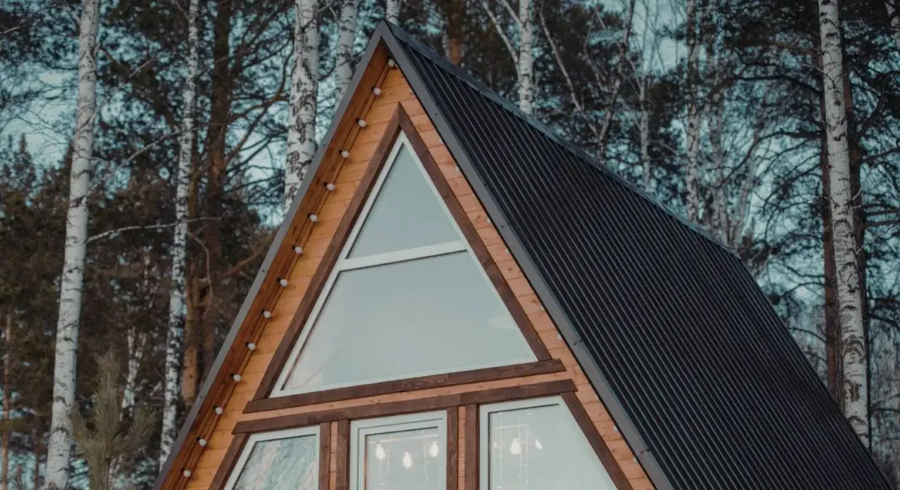

ARTYKUŁ • 10 października 2026
Jak planować weekendowy wyjazd w rytmie slow
Weekend to tylko 48 godzin. Ale odpowiednio zaplanowany może dać więcej niż tydzień w pośpiechu. Oto 7 zasad slow weekendu — z konkretnymi przykładami polskich miejsc, cenami i sprawdzonymi scenariuszami.

Weekend to tylko 48 godzin — a jednak można w nim zmieścić naprawdę dużo, jeśli planuje się go mądrze. Problem w tym, że większość z nas planuje weekend odwrotnie: próbuje zobaczyć jak najwięcej, dojechać jak najdalej i wrócić jak najpóźniej. Efekt? Poniedziałek zaczyna się od zmęczenia, a wspomnienia z weekendu zlewają się w jedną wielką plamę. Slow weekend to nie weekend bez planu — to weekend z planem, który zostawia miejsce na życie.
Dlaczego slow weekend działa
Badania nad percepcją czasu pokazują coś nieintuicyjnego: im więcej bodźców w krótkim czasie, tym mniej pamiętamy. Weekend wypełniony atrakcjami od rana do nocy zlewa się w jedno wspomnienie — pamiętamy, że byliśmy, ale nie pamiętamy, co było. Weekend z mniejszą liczbą doświadczeń, ale głębszych, zostaje w pamięci znacznie dłużej.
Slow weekend oznacza, że rezygnujesz z ilości na rzecz jakości. Zamiast trzech miast w dwa dni — jedno miasto i trzy dobre posiłki. Zamiast pięciu zabytków dziennie — jeden, ale zwiedzony bez pośpiechu. Zamiast zdjęć z każdego miejsca — kilka zdjęć z miejsca, w którym naprawdę byłeś. To brzmi jak strata czasu, ale w praktyce okazuje się, że z weekendu wraca się bardziej wypoczętym, niż się wyjechało. Coś, czego nie da się powiedzieć o weekendzie „zaliczonym„ w trybie maratonu.
Polska jest do tego idealna. Nie musisz lecieć do Barcelony ani jechać do Berlina. W promieniu 2–3 godzin jazdy od każdego większego miasta w Polsce są miejsca, które w trybie slow wyglądają zupełnie inaczej niż w trybie „szybkiego zwiedzania„.
7 zasad planowania slow weekendu
1. Jedno miejsce zamiast trzech
Zamiast próbować zobaczyć trzy miasta w jeden weekend, wybierz jedno i zostań w nim dłużej. Zobaczysz więcej, bo nie stracisz czasu na przejazdy i pakowanie. Przykład: weekend w Kazimierzu Dolnym zamiast weekendu „Kazimierz + Lublin + Zamość„. Pierwszy da ci trzy dni w jednym miejscu, drugi — trzy wspomnienia, których nie pamiętasz.
Praktycznie: wybierz miejsce oddalone o maksymalnie 3 godziny jazdy od domu. Dalsze dojazdy zjadają weekend.
2. Nie planuj co do minuty
Zostaw sobie przestrzeń na spontaniczność. Zaplanuj główne punkty — gdzie spać, co zjeść, co zobaczyć — ale zostaw czas na to, co przyniesie dzień. Restauracja, którą znajdziesz po drodze, okaże się często lepsza niż ta z przewodnika. Rozmowa z mieszkańcem wskaże miejsce, którego nie ma w żadnym blogu.
Praktycznie: w sobotę wieczorem nie planuj nic konkretnego. Zostaw ten czas na „co się zdarzy„.
3. Jedz lokalnie
Zamiast sieciówek, wybierz bary mleczne, gospody wiejskie, agroturystyki. Jedzenie jest tam tańsze, lepsze i bardziej autentyczne. To część podróży, nie tylko przerwa. W Polsce bary mleczne są dotowane przez miasto — obiad za 15–25 zł jest normą, a nie wyjątkiem.
Praktycznie: przed wyjazdem sprawdź, czy w miejscu docelowym jest bar mleczny lub gospoda wiejska. Unikaj restauracji na głównych rynkach — są droższe i gorsze.
4. Wybierz jedno doświadczenie
Zamiast zwiedzać wszystko, wybierz jedno doświadczenie, które zapamiętasz. Spływ kajakowy, wizyta w warsztacie rzemieślniczym, wieczór w schronisku górskim, pieczenie chleba w agroturystyce — coś, co zostanie z tobą na długo.
Praktycznie: przed wyjazdem zapisz sobie jedną rzecz, którą chcesz zrobić. Nie listę 10 rzeczy — jedną. To zmienia sposób myślenia o całym weekendzie.
5. Unikaj szczytu sezonu
Weekend w szczycie sezonu oznacza tłumy, wysokie ceny i stres. Wybierz weekend poza sezonem — wtedy miejsca są spokojniejsze, a ty możesz naprawdę odpocząć. Nad Bałtykiem to wrzesień i czerwiec. W Bieszczadach to maj i październik. W Tatrach to wrzesień i maj. Wszędzie poza lipcem i sierpniem.
Praktycznie: jeśli musisz jechać w szczycie sezonu, wybierz miejsca mniej znane, ale sąsiadujące z popularnymi (np. zamiast Sopotu — Mechelinki, zamiast Zakopanego — Bukowina Tatrzańska).
6. Wracaj wieczorem, nie w nocy
Zaplanuj powrót tak, żeby wrócić wieczorem, nie w środku nocy. Dzięki temu poniedziałek nie będzie koszmarem, a wspomnienia z weekendu pozostaną czyste. Wracanie o 2:00 w nocy, żeby „wykorzystać„ jeszcze jeden dzień, to fałszywa oszczędność.
Praktycznie: zaplanuj wyjazd powrotny na 17:00–19:00. W domu będziesz o 20:00–21:00, zdążysz się rozpakować, zjeść kolację i pójść spać o normalnej porze.
7. Zostaw coś na następny raz
Nie próbuj zobaczyć wszystkiego. Zostaw coś na następny raz — to najlepszy sposób, żeby wrócić i odkryć więcej. Slow travel to nie jednorazowy wyjazd, to sposób myślenia o podróżach. Wracanie w to samo miejsce po roku lub dwóch daje coś, czego nie da żadna nowa destynacja: poczucie, że znasz to miejsce naprawdę.
Praktycznie: pod koniec weekendu zapisz sobie jedno miejsce, do którego chcesz wrócić. Następny weekend w tym samym miejscu — to nie porażka planowania, to jego sukces.
Jak to wygląda w praktyce — przykładowy plan weekendu
Załóżmy, że jedziesz z Warszawy w Bory Tucholskie. Wyjazd w piątek po pracy, ok. 18:00. Dojazd 3,5 godziny, na miejscu ok. 21:30. W sobotę rano spacer po okolicy, śniadanie w agroturystyce. Po południu spływ kajakowy Wdą (jedno doświadczenie z zasady #4). Wieczorem kolacja w gospodzie. W niedzielę rano — spacer po lesie, potem wykwaterowanie o 11:00, obiad w przydrożnej gospodzie o 13:00, powrót do Warszawy o 17:00. W domu o 20:30.
W ten weekend nie zobaczyłeś wszystkiego, co można zobaczyć w Borach Tucholskich. Ale zobaczyłeś wystarczająco, żeby chcieć wrócić. I wróciłeś wypoczęty, nie zmęczony.
Praktyczne wskazówki
- Rezerwuj noclegi — nawet poza sezonem, zwłaszcza jeśli jedziesz w długi weekend. Agroturystyki i małe pensjonaty bywają pełne.
- Zabierz kurtkę i buty trekkingowe — nie planuj pogody, planuj elastyczność. Nawet w lipcu w Polsce może padać.
- Miej offline mapę — w wielu miejscach poza miastami zasięg jest słaby. Awarie sieci zdarzają się w najmniej odpowiednim momencie.
- Nie planuj więcej niż 3 punkty na dzień — rano, popołudnie, wieczór. Więcej to już maraton.
- Zostaw telefon w kieszeni — jeden wieczór bez ekranu to najprostszy sposób, żeby naprawdę odpocząć.
- Zrób listę „do zjedzenia„ zamiast listy „do zwiedzenia„ — jedzenie zapamiętuje się dłużej niż zabytki.
Podsumowanie
Slow weekend to nie weekend bez planu — to weekend z planem, który zostawia przestrzeń na życie. Zaplanuj mniej, zobacz więcej, wróć wypoczęty. To wszystko, czego potrzeba. A jeśli chcesz zacząć od konkretnego miejsca, sprawdź nasze propozycje kierunków — od Bałtyku po Bieszczady, wszystkie opisane w tym samym duchu.